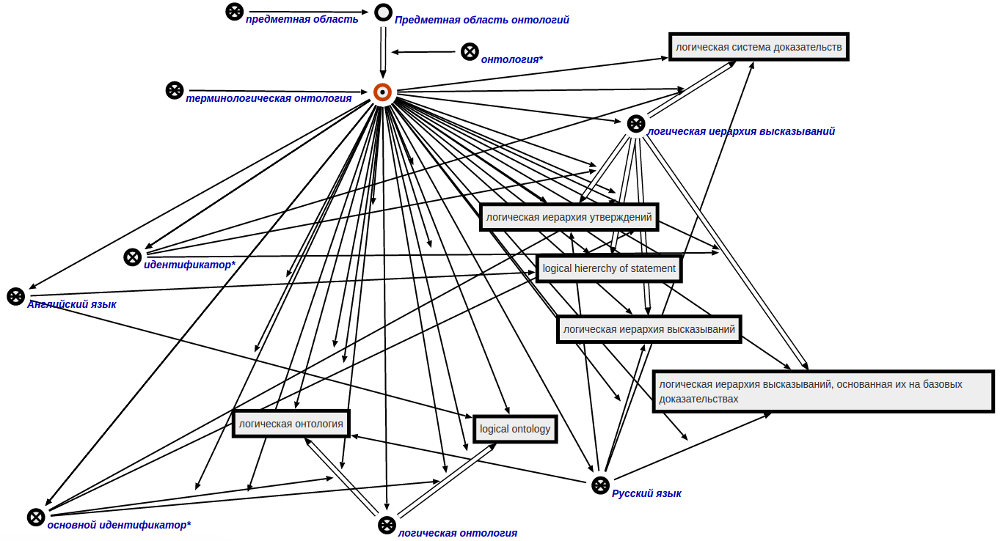

Команда формирования терминологической онтологии для заданной предметной области предназначена для формирования терминологической онтологии для заданной предметной области. Единственным аргументом команды является предметная область, для которой будет формироваться терминологическая онтология. Результатом выполнения команды является сформированная терминологическая онтология, связанная с заданной предметной областью связкой отношения онтология*. Для Предметной области онтологий будет построена следующая терминологическая онтология:
